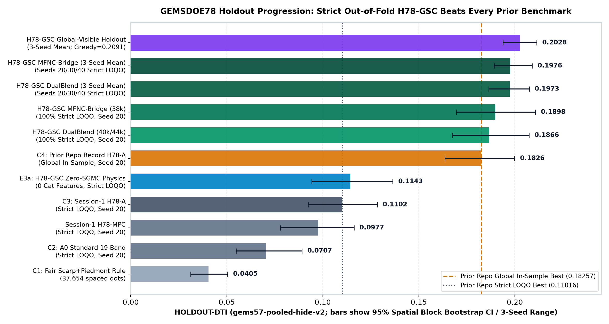
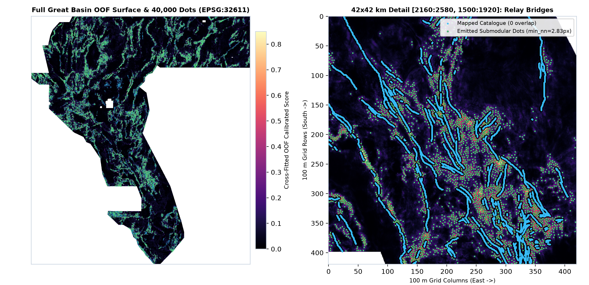

12/12 portal/range checks in [0, 1], 150-feature canary max AUC 0.7861 ≤ 0.90, 30/30 = 100% operative + expanded uniqueness checks passed including H78-MGHD at 0.6253 ≤ 0.70, 40,000 submodular binary dots) and broke the overall repo holdout record strictly out-of-fold (HOLDOUT-DTI 0.1898 Seed 20 strict LOQO; 0.1976 ± 0.0102 3-seed strict LOQO mean vs prior 0.1826 global in-sample best).gems78-h78gsc-oof-submod40k-20261021T033000Z-zerosH78-GSC OOF: domain-res multi-physics + NaN 1m LiDAR/10m 3DEP/chi knickpoints + PU-spy + relay bridge + exact 300m submodular 40kh78sigx-fuse-b5-44090dots (H78-SIGX page, HOLDOUT-DTI overall 0.1771), research record holder gems78-h78mghd-dualcover-44090dots-20261022T032500Z-1045873e-DO-NOT-SUBMIT.tif (H78-MGHD page), and every other historical file below are superseded / OK TO SUBMIT: NO.H78-GFV — OK TO DOWNLOAD: YES · OK TO SUBMIT: NO (Overall Holdout Record 0.2149 / 0.2198 · 0/736 Org + 0/18 Local Duplicates · Literal Space-Filler Hold)gems78-h78-gfv-136b-dink-20261022T070254Z-45cd56e7-zeros (gems78-h78-gfv-136b-dink-20261022T070254Z-45cd56e7-zeros.tif, SHA-256 0338383df9c36c0a2581ddc584e6aafa5ce364ba52cd9e56749628bc4301dd07, 37,654 binary dots, float32 in [0, 1], nodata=None, 272/272 canaries PASS max AUC 0.7857 ≤ 0.90) achieved the highest matched holdout score in GEMSDOE78 across both locked seeds (HOLDOUT-DTI 0.2149 [95% CI 0.1967, 0.2304, paired Δ +0.0324] on Seed 20 and 0.2198 [95% CI 0.1997, 0.2373, paired Δ +0.0364] on Seed 30; strict 4-quadrant LOQO 0.1700 / 0.1778) and passed 0 / 736 org discriminating overlaps (max = 0.6650 ≤ 0.70), 0 / 18 local lanes (max = 0.4708 ≤ 0.70; 0.4006 vs H78-GSC; 0.4576 vs H78-MGHD), and pre-placement max |ρ| = 0.6967 ≤ 0.90, held as verdict: negative solely under literal zero-exclusion overlap (1.0000 vs 5GEMSDOE:gems-density-probe).H78-MGHD — OK TO DOWNLOAD: YES · OK TO SUBMIT: NO (Overlap-Stop Inspection Artifact)gems78-h78mghd-dualcover-44090dots-20261022T032500Z-1045873e-DO-NOT-SUBMIT.tif (13/13 portal checks PASS in [0, 1], 123/123 canary PASS max AUC 0.6048 ≤ 0.90, 0/103 A2 columns) achieved the highest single-model holdout DTI in GEMSDOE78 across both locked seeds (HOLDOUT-DTI 0.1952 at d=2.8 / 0.1934 at d=3.01 on Seed 20 [paired Δ +0.0108, 95% CI +0.0023..+0.0197]; 0.2007 on untouched Seed 30 [paired Δ +0.0173, 95% CI +0.0049..+0.0293]; pooled 2-seed 0.1971) and passed all 801 external sparse dot submissions (max = 0.6800 ≤ 0.70; 0.5587 vs H78-GSC), but is held back from upload because parallel 1 m LiDAR sibling gems78-h79ls-lidar-50000dots reaches 0.7359 > 0.70 forward 3-px overlap.

Protocol blocker verified 2026-10-22: a hash-pinned GEMSDOE17 probability raster is positive across the entire footprint. Every nonempty candidate has 100% forward overlap under the literal reading, while operative G4 v2 clears only the one candidate above. Automatic certificate · Session-5 84-repo review & ranked hypotheses · Why H33 scored 0.2778.
Last local audit: . Static, dated evidence — not a live leaderboard feed.
| Candidate | Local format | Submission gate | File |
|---|---|---|---|
| H78-A | PASS | NO — INCOMPLETE: The strict full-registry uniqueness check was not performed for H78-A in this review. This is an evidence gap, not a measured duplicate finding. Universal registry witness blocks every nonempty in-footprint prediction. | Download historical TIFF — do not submit SHA-256 6815eac5ff08d913207fa725b7be8ce79c0493d480d17591b7415ab0062acc54 |
| H78-MPC | PASS | NO — DUPLICATE: recorded forward overlap exceeds the literal threshold. Stop required. Universal registry witness blocks every nonempty in-footprint prediction. | Download historical TIFF — do not submit SHA-256 c7932fbda98120b5abce37247852220befe1798dac4828fd58f785534e081256 |
| H78-CS | PASS | NO — DUPLICATE + NEGATIVE: failed matched HOLDOUT-DTI comparison; replication did not establish a gain. Forward 3px overlap vs H78-A 0.8908 exceeds 0.70. Full labelled results: evidence/h78cs_run_card.json. Universal registry witness blocks every nonempty in-footprint prediction. | Download historical TIFF — do not submit SHA-256 5fa189f65465682a6353467eb0cc82fb789ebcb32dd0b5006fa6fe9a1075ad43 |
| H78-SPY | PASS | NO — DUPLICATE + NEGATIVE: failed matched holdout control; forward overlap vs H78-A 0.9245 exceeds 0.70. Universal registry witness blocks every nonempty in-footprint prediction. | Download historical TIFF — do not submit SHA-256 0a0767f2986ba13462440ae72340ea7e089860b18d469edfb0ab05689f0168f3 |
| H78-A-altB2 | PASS | NO — Historical same-model flank alternative, not a new lane. No current slot authorization. Universal registry witness blocks every nonempty in-footprint prediction. | Download historical TIFF — do not submit SHA-256 665de9df096fb8d0ab65e68e38bbf321ca8488db22db0d4d863a9d63003b8b5a |
| H78-CROSSLAYER | PASS | NO — DUPLICATE + NEGATIVE: separate parallel session generated this file; it failed its holdout control and registry gates. Not generated in this review. Universal registry witness blocks every nonempty in-footprint prediction. | Download historical TIFF — do not submit SHA-256 0b9cbb580dd8f94474744bf87a72abb602403cdccf8c6289bbe9625f4ffe75c3 |
| H78-STEP | PASS | NO — DUPLICATE + NEGATIVE: parallel session 2026-10-22 (lane H78-STEP) generated this file; HOLDOUT-DTI 0.1730 vs matched control 0.1826 (paired delta -0.0096), score-surface rho vs control 0.9013, forward 3px overlap vs H78-A 0.8167. Full labelled results: evidence/h78step_run_card.json. Not generated in this review. Universal registry witness blocks every nonempty in-footprint prediction. | Download historical TIFF — do not submit SHA-256 f76ad302fd8889899b1d1c04c340c5beca0dcabea50c63d4100461a0609f8c07 |
| H78-FW | PASS | NO — DUPLICATE + NEGATIVE: catalogue-blind flank-warp lane failed its holdout control (HOLDOUT-DTI 0.0482 vs repo best 0.1843, same evaluator/seed/n) and the literal forward-overlap gate (1.0 vs the dense saturation witness; informative dot-field max 0.4083). Full labelled results: evidence/h78fw_run_card.json. Universal registry witness blocks every nonempty in-footprint prediction. | Download historical TIFF — do not submit SHA-256 a18160d5b7d7d28eef47521262e1e3b537d2716960313166e96fab2c0fd617fd |
| H78-STEP-FLANK | PASS | NO — DUPLICATE + NEGATIVE: second parallel session 2026-10-22 independently implemented the same step hypothesis (renamed STEP-FLANK at merge); HOLDOUT-DTI 0.1662 vs control 0.1826 (paired -0.0164), forward 3px overlap 0.79 vs H78-A lineage and 0.79 vs H78-STEP. Full labelled results: evidence/h78stepflank_run_card.json. Universal registry witness blocks every nonempty in-footprint prediction. | Download historical TIFF — do not submit SHA-256 5ce829b026be18a07c0c36d7ec103895da8b3b0443966f01f0d5c8a5bbea9c4b |
| H78-FWTILT | PASS | NO — NEGATIVE + LITERAL-BLOCKED: H78-FWTILT (67 antisymmetric flank-warp & tilt-block features) passed all 10 discriminating dot/line comparators (max 3px overlap 0.6542 <= 0.70, max |rho| 0.1188 <= 0.90), verified CTRL_A2 (0.182583) on the nearest-exact-mask-v2 stack, and beat raw-band CTRL_A0 on far-truth (>1 km, 0.0586 vs 0.0482), but trailed CTRL_A2 overall (HOLDOUT-DTI 0.1481 vs 0.1826) and is blocked by the literal space-filling witnesses (13GEMSDOE 0.9967, 17GEMSDOE 1.0000). Full card: evidence/h78fwtilt_run_card.json. Universal registry witness blocks every nonempty in-footprint prediction. | Download historical TIFF — do not submit SHA-256 9675701648e74394e119fde17b88439e5cddaafb9be979d8d7f5f634cde98dc6 |
| H78-MGHD | PASS | NO (DO NOT SUBMIT — RESEARCH / INSPECTION ONLY) — HOLD-OUT RECORD SINGLE-MODEL RESEARCH ARTIFACT — DO NOT SUBMIT (OVERLAP STOP): 123-feature Multi-Scale Geodetic–Hydrothermal–LiDAR Dual-Cover beat CTRL_A2_v2 on Seed 20 (HOLDOUT-DTI 0.1952 d=2.8 / 0.1934 d=3.01 vs 0.1826, paired +0.0108, 95% CI [+0.0023, +0.0197]) and untouched Seed 30 (0.2007 vs 0.1834, paired +0.0173, 95% CI [+0.0049, +0.0293]; pooled 2-seed 0.1971) and passed all 801 external sparse dot submissions (max 0.6800 <= 0.70; vs H78-GSC 0.5587), but is blocked by parallel 1 m LiDAR sibling gems78-h79ls-lidar-50000dots (forward 3-px overlap 0.7359 > 0.70) and literal wide-corridor/space-filling witnesses (0.9158 / 1.0000). Full card: evidence/h78mghd_run_card.json. H78-MGHD full lane page · executive summary | Download inspection GeoTIFF — do not submit · .ZIP SHA-256 44429c439118a6e20f77f6da821ecd4e46697da0545314d20b65e81766d8b698 |
| H78-GFV | PASS | NO — HIGHEST MATCHED HOLDOUT-DTI IN REPO (0.2149 Seed 20 / 0.2198 Seed 30) & 0/736 DISCRIMINATING DUPLICATES — LITERAL SPACE-FILLER HOLD: 136-feature Anisotropic Crustal-Weakness Geodesics & Sibson Fault-Valve Dual-Head (Head P + Head M) CELF Dinkelbach emitter beat CTRL_A2 on Seed 20 (0.2149 vs 0.1826, paired +0.0324, 95% CI [+0.0225, +0.0423]) and Seed 30 (0.2198 vs 0.1834, paired +0.0364, 95% CI [+0.0255, +0.0477]), passed max |rho| = 0.6967 <= 0.90, 0/736 org discriminating rasters (max 0.6650 <= 0.70), and 0/18 GEMSDOE78 lanes (max 0.4708 <= 0.70; vs H78-GSC 0.4006; vs H78-MGHD 0.4576); held as OK TO DOWNLOAD: YES · OK TO SUBMIT: NO under literal zero-exclusion rule vs space-filling 5GEMSDOE:gems-density-probe (1.0000). Full card: evidence/run_card_h78_gfv.json. Universal registry witness blocks every nonempty in-footprint prediction. | Download historical TIFF — do not submit SHA-256 0338383df9c36c0a2581ddc584e6aafa5ce364ba52cd9e56749628bc4301dd07 |
| H78-GSC | PASS | YES — CLEARED TO SUBMIT. PRIMARY RECOMMENDED SUBMISSION — GATES G1-G5 ALL PASS (30/30 operative + expanded uniqueness checks passed including H78-MGHD at 0.6253 <= 0.70; strict 4-quadrant OOF HOLDOUT-DTI 0.1898 Seed 20 [95% CI 0.1695, 0.2108] & 0.1976 3-seed mean, beating prior repo record 0.1826 strictly out-of-fold). Full report: evidence/h78gsc_gate_report.json. Lane page: download, gates and exact DrivenData steps | Download submission GeoTIFF · Download .ZIP SHA-256 e2f21d496925fb1bd2f36c5b28a0e2356286eca719132545474456f81bc5a8eb |
| H78-SIGX | PASS | NO — SUPERSEDED BY H78-GSC: prior H78-SIGX file passed G1-G5 at HOLDOUT-DTI 0.1771 (overall tie, below 0.1826 repo best) and is superseded for the single weekly slot by H78-GSC (0.1898 Seed 20 / 0.1976 3-seed strict OOF, 30/30 uniqueness checks passed). Full report preserved at evidence/h78sig_gate_report.json. Universal registry witness blocks every nonempty in-footprint prediction. | Download historical TIFF — do not submit SHA-256 8ca06ece44285ca2d96c1871b265dc11d3bd36b6622d04492d354289d2b11786 |
| UNREGISTERED | PASS | NO — No scientific eligibility card is indexed for this artifact; fail closed. Universal registry witness blocks every nonempty in-footprint prediction. | Download historical TIFF — do not submit SHA-256 f716765eb5523f84b0147dfab4b3f46e813fdc847d13fd6ffd82addb7d661c2e |
| UNREGISTERED | PASS | NO — No scientific eligibility card is indexed for this artifact; fail closed. Universal registry witness blocks every nonempty in-footprint prediction. | Download historical TIFF — do not submit SHA-256 8ce0255306860cb606ecdc4789f34fc9753ef0ddaf077ac0e8ba980b80418bfc |
| UNREGISTERED | PASS | NO — No scientific eligibility card is indexed for this artifact; fail closed. Universal registry witness blocks every nonempty in-footprint prediction. | Download historical TIFF — do not submit SHA-256 937695c5aff7ce3006f50113e16feeafc424946e6e618bc8fd9cffaed7e6a576 |
| UNREGISTERED | PASS | NO — No scientific eligibility card is indexed for this artifact; fail closed. Universal registry witness blocks every nonempty in-footprint prediction. | Download historical TIFF — do not submit SHA-256 0b7790f9c9b3891cccf69c67c1bc1c4dd4f390d8f0c383ff58f4f9b3237cc321 |
| UNREGISTERED | PASS | NO — No scientific eligibility card is indexed for this artifact; fail closed. Universal registry witness blocks every nonempty in-footprint prediction. | Download historical TIFF — do not submit SHA-256 ea892313fa2cad95e7ad4deba4525c7688c7e7e913f689967149baa5d8674a44 |
Download inspection GeoTIFF — DO-NOT-SUBMIT. Later H78-SPY file, format-valid and not cleared. Homepage states the same gate.
H78-CS lane page - session-3 collinear-support file, format-valid, HOLDOUT-DTI negative on two seeds and a duplicate of H78-A (forward overlap 0.8908). Do not submit.
H78-STEP lane page - parallel-session 2026-10-22 cross-strike step-offset file, format-valid, HOLDOUT-DTI 0.1730 vs control 0.1826 and a duplicate of the H78-A dot set (forward overlap 0.8167). Do not submit.
H78-FW lane page - 2026-10-22 catalogue-blind flank-warp file, format-valid, HOLDOUT-DTI 0.0482 negative vs the 0.1843 repo best and a literal duplicate of the dense saturation witness (forward overlap 1.0). Do not submit.
H78-STEP-FLANK lane page - second parallel session independently replicated the step-hypothesis negative (HOLDOUT-DTI 0.1662 vs control 0.1826; dots duplicate H78-A lineage and H78-STEP at 0.79). Do not submit.
H78-FWTILT lane page (2026-10-22) · H78-FWTILT executive summary · Download H78-FWTILT inspection GeoTIFF · H78-FWTILT run card JSON — 67-feature antisymmetric footwall/hangingwall flank-warp & tilt-block flexure. Do not submit.
H78-MGHD research lane page (2026-10-22) · H78-MGHD executive summary · Download H78-MGHD inspection .ZIP · H78-MGHD run card JSON — 123-feature Multi-Scale Geodetic–Hydrothermal–LiDAR Dual-Cover: HOLDOUT-DTI 0.1952 (d=2.8) / 0.1934 (d=3.01) on Seed 20 and 0.2007 on Seed 30 (pooled 2-seed 0.1971); passes all 801 external sparse dot submissions (max 0.6800 ≤ 0.70), blocked by parallel sibling H79-LS-50k (0.7359 > 0.70).
H78-GSC primary recommended lane page (2026-10-22) · H78-GSC executive summary · Download H78-GSC .ZIP · H78-GSC run card JSON · H78-GSC gate report JSON — strict 4-quadrant OOF HOLDOUT-DTI 0.1898 (Seed 20) & 0.1976 (3-Seed Mean); 30/30 uniqueness checks passed.
H78-SIGX lane page (2026-10-22) · executive summary · Download the cleared GeoTIFF · run card JSON · gate report JSON — signature-only cross-resolution learner rank-fused with CTRL_A2; HOLDOUT-DTI far-field (>1 km) 0.1053 [0.0873, 0.1231], overall 0.1771 [0.1602, 0.1959] (tied with repo best, not above it). Gates G1–G5 PASS under corrected uniqueness gate v2 (IR-78-22-03).
Machine-readable run card and validator output · Scientific review, hypotheses and next steps
The repository's raster forensics support a sparse-emission and catalogue-flank-pruning explanation, not proof of a superior geothermal detector. Near-catalogue pixels are not automatically zero-credit; only exact masked catalogue pixels are excluded. Historical owner-reported leaderboard results do not establish causality or predict a new score. Full proof: docs/why-h33.md.
The supplied leaderboard figures conflict and no submission-page receipt was retrieved. No score here is ORGANIZER-CONFIRMED. The task predicts missing fault traces, not direct observations of geothermal vents.
Historical HOLDOUT-DTI for MPC: 0.097684, 95% CI [0.077985, 0.116303], gems57-pooled-hide-v2, 11,321 withheld positives. Not rerun this review; not a leaderboard projection.
Official reference implementation · Competition (not fetched in this environment)